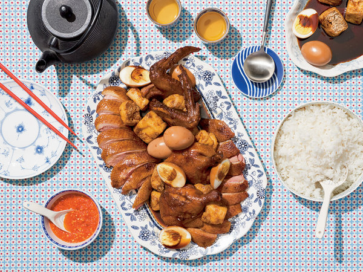

Braised Duck

Description
The Singaporean flavors of star anise, galangal and molasses-like soy sauce are a natural with duck — they may seem unfamiliar for some, but they parallel the idea of pairing fruits or warm winter spices with the bird. Reflecting her modern sensibility, Cheryl Lu-Lien Tan took this recipe from her grandmother and tweaked it to serve the duck at a slightly pink medium rather than fully cooked. Of course, you may cook it through if you prefer. —Francis Lam
Ingredients
- 1 5-pound duck, whole
- 2 tablespoons kosher salt, plus more to taste
- 2 tablespoons Chinese five-spice powder
- 8 teaspoons sugar
- 4 pods star anise
- 15 cloves garlic, lightly smashed
- 4 inches galangal or ginger, peeled and sliced into 1/4-inch coins
- 1 cup kecap manis (see note)
- 14 ounces packaged fried tofu, cut into 2-inch pieces
- 6 hard-boiled eggs
- Steamed rice, for serving
- Auntie Khar Imm’s Chile Sauce
Steps
- Trim the duck of any visible excess fat, especially from the tail area. Mix together the salt and five-spice powder, and season the duck all over, including inside the cavity, and marinate, refrigerated, for 2 hours or overnight. Rinse the duck with fresh water inside and out.
- Place a large wok or Dutch oven over medium heat, and add the sugar. After it liquefies, watch it carefully as it caramelizes to a medium brown, swirling the pot occasionally to help it color evenly. Add the star anise, garlic and ginger, and stir to coat in the caramel, and to keep the caramel cooking until it’s a dark brown, but not burned. Stir in 1 cup of water to dissolve the caramel, then add the kecap manis.
- Add duck, breast side up, then add water to come up halfway, submerging the legs. Raise the heat to bring the liquid to a boil, then turn the heat down to a very gentle simmer, just barely bubbling.
- Cook for 15 minutes, then carefully flip the duck so the breast side is down. Cook 15 minutes, then flip again. Taste the liquid, and add salt or more kecap manis to taste. Cook 15 minutes, then flip so the breast side is down again. Cook another 5 to 15 minutes, until the breast is cooked to your liking. Traditionally it should be cooked through, but Tan’s spin is to remove the duck when the breast meat is 135 to 140 degrees, or medium. To use a traditional test, poke a chopstick in the thickest parts of the duck thigh and breast; if it goes through without too much resistance, it’s done.
- Remove the duck to a platter or cutting board, and tent with foil. Let it rest for 10 minutes. Add the tofu and eggs to the sauce, and simmer them gently for 10 minutes, until stained and hot. Skim the sauce of any floating fat if necessary, and serve it all with rice and chile sauce.